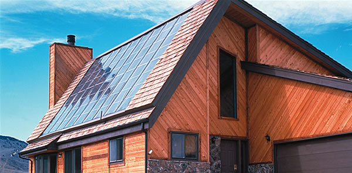
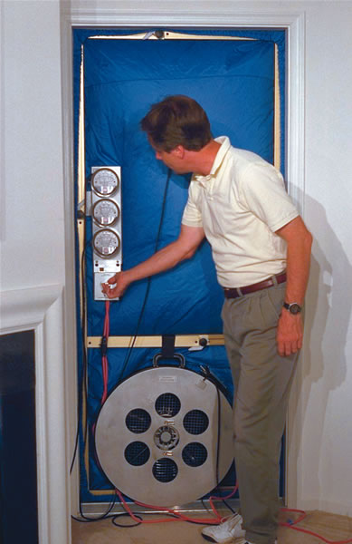
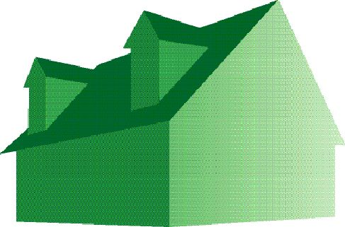

NEW ENERGY INCENTIVES
Back in the early 1980s, we bought a solar water heater for our home and took advantage of a great federal tax credit (I think it was around 40 percent). I heard on the news that the new energy bill signed by President Bush has tax credits for solar energy systems. Are these the same credits we had before?
-Joseph W.
Scranton, Pennsylvania
Actually, they are much more comprehensive. The Energy Policy Act of 2005 is the first major federal government program for energy in the past 13 years, and it gives tax credits far beyond the solar-only ones that started during the Carter administration and ended in 1985.
The new bill provides tax credits for highly efficient new homes, improvements to existing buildings, high-efficiency air conditioners and home fuel-cell systems, as well as solar water-heating systems and photovoltaics (solar electric systems) installed after Jan. 1, 2006.
Credit amounts range from 10 percent to 30 percent-or offer a fixed dollar amount depending on the measures you take-and you can take advantage of multiple tax incentives when you buy a home or improve your current one. Keep in mind that these are credits, not deductions. The amount of the credit is subtracted directly from the taxes you owe, unlike deductions, which are subtracted from your income to determine your tax liability.
If you buy a new home that uses at least 50 percent less energy compared to the requirements in the model energy code-which contains energy-efficiency criteria for new residential buildings-you will receive a $2,000 tax credit. Even if you aren’t buying a new home, many incentives are available that can make your next home more efficient. Fix up your current home with insulation, new windows or doors, and you can receive a credit of 10 percent (up to $500). Buy a high-efficiency air conditioner, water heater or fan and you can get a credit up to $300. Solar water-heating systems and solar electric systems are eligible for credits of 30 percent (up to $2,000 each). Other products and building strategies are eligible to receive credits, including incentives specifically for manufactured homes. You can check out this easy-to-follow summary of the incentives at aceee.org/press/Tax_incentive05.pdf, or get a summary of the various programs at fsec.ucf.edu/EPAct-05.htm. For more detail, you can find the entire 1,724-page bill at energy.senate.gov/public/_files/ConferenceReport0.pdf.
DO YOU NEED A BLOWER DOOR TEST?
We’ve had contractors come to our home and talk to us about energy-saving ideas. They told us we need a blower door test. Is this some kind of gimmick or will it actually help us?
-Jason G.
San Diego, California
In a world where e-mail messages promise us great riches and incredible bargains every day, people are extremely skeptical about sales claims. However, in this case, the answer is a resounding “do it!”
One of the most likely causes of high energy bills is air leaking into and out of your house. The easiest way to tell if your home is leaking air is to walk around your home on a windy day and hold your hand near windows and doors, in front of electrical outlets and against walls to feel for any air currents. Odds are good you’ll find places in your home that need to be sealed better-usually around openings from the outside for wires and pipes, in places where different building materials meet, and where cracks and holes have developed in walls or floors. Sealing these openings will dramatically reduce the amount of cooled or heated air that escapes outside and, conversely, will keep outdoor air where it belongs.
Since the 1970s, heating, ventilating and air-conditioning (HVAC) contractors have used blower door tests to measure unwanted airflow problems. It’s a fairly simple test: A special panel system with a variable-speed blower is fastened securely into one of your home’s doorways, and the blower creates a pressure difference between the inside of your home and the outdoors that pushes air through any openings. The contractor probably will use a little smoke stick that allows him or her to see where the air is flowing. The problem spots then can be identified and sealed to stop the air leakage. HVAC contractors also can identify leaky places in your home’s ductwork, which can be another major cause of high energy bills.
Your contractor often can perform these tests at a fairly low cost, and repairing the sources of unwanted airflow is not expensive. Take the advice of the HVAC contractor and have the leaks sealed. Be sure to hire someone with experience in this field and check his or her references. This isn’t a job for the casual DIYer or for a company without experience and knowledge of home ductwork systems.
REDUCING WINDOW CONDENSATION
We live in an older house that hasn’t been remodeled much over the years, and we get a lot of condensation on our windows. I know you would recommend replacing them with newer windows, but can we do anything about this without spending much money?
-Bernice W.
Omaha, Nebraska
Basic windows with single or even double panes that have standard aluminum frames can cause water vapor to condense on the inside of the windows during winter. That water often drains to the bottom of window sills where it can rot the sills and even ruin the wall finish and sheetrock. Condensation can be a problem in summer, too, when moisture collects on the outside of windows after the glass surface falls below the dew point.
Certainly these problems can block your exterior view, but what’s worse is the damage they can cause to your home. Frankly, it’s hard to eliminate all the moisture that accumulates on windows, which is especially prevalent in single-pane windows or in homes with inadequate ventilation. But controlling this moisture problem can help reduce the growth of mold, mildew and damage to the walls.
One thing you can do is lower your home’s indoor humidity. Use vent fans in your kitchen and bathrooms to remove moisture from the house. Make sure your clothes dryer is vented to the outdoors and the exhaust is flowing freely out of the machine and into the vent. In winter, cover your windows with storm windows or insulation kits available at hardware stores. If you have a humidifier, make sure it’s not set to put too much moisture into the home’s air.
Ken Sheinkopf is a communications specialist with the American Solar Energy Society (www.ases.org).
|
 This house in Golden, Colo., uses flat-plate solar panels to heat water, which is then stored for domestic use in a tank similar to a conventional gas or electric water heater. |
 A blower door test can help you find and seal leaks in your home. |
|
|
 |
|
|